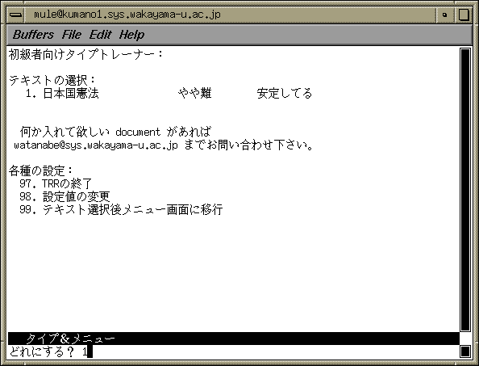
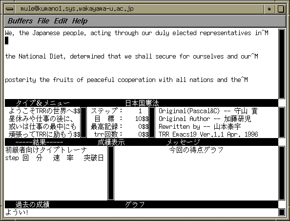
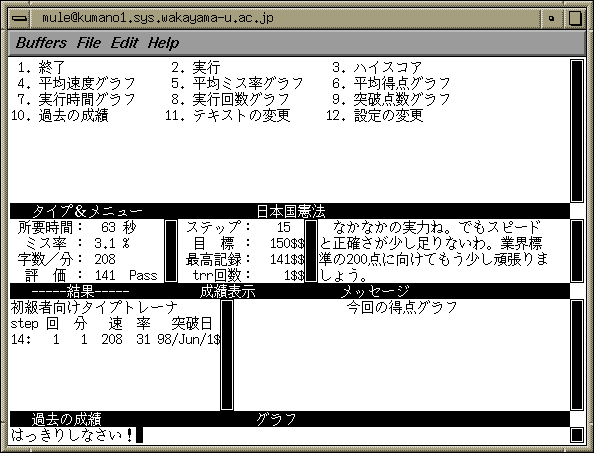

mule を起動して、trr を実行（M-x trr[Enter]）してください。

1 を選んでください。

タイピングを開始するとスタートします。 ^M は改行（[Enter]）です。

終わるときは 1 を選んでください。
mule などのテキストエディタには、 ワードプロセッサのようなレイアウト機能はありません。 そこで、論文のように書式の定まった印刷物を作成するのに用いられる TeX について解説します。
パソコンのワードプロセッサのように、 画面上でレイアウトを整えて印刷するような場合を、 WYSIWYG （What You See Is What You Get ～見たままを手にいれる） と言います。この方法はわかりやすく、 見た目の通りにに文書のレイアウトを行うことができます。 その一方で、長い文書を清書しようとすると、 全体のレイアウトを統一するのに結構骨が折れますし、 文字のサイズや用紙のサイズを変更したりすると、 レイアウトをはじめからやり直さなければならないこともしばしば起こります。
これに対して TeX は、 Web ページのレイアウトを HTML で行ったのと同じように、 文書のレイアウトを一種の“プログラミング言語”のような方式で行います。 この方法ではレイアウトをすぐに画面上で確認することはできませんが、 長文でも統一の取れたレイアウトを保ちやすいというメリットがあります。 また TeX は組版、 すなわち印刷所で植字工がレイアウトの美しさを考えながら、 試行錯誤で活字を詰めていく方法にならって設計されているので、 文字間隔などを TeX の処理系（プログラム）自身が仕上がりの美しさを考えながら、 自動的に決定してくれます。 TeX のような方式をバッチ式と言います。
TeX とワープロとどっちが「楽」かというのは良く議論になります。 取っつきやすさと言う点では、もちろんワープロに軍配が上がるでしょう。 しかし、少なくとも私は、 ワープロできれいに文書をレイアウトする手間を考えると、 TeX に勝手にやってもらった方がずっと楽だと感じています。
ただ、TeX 自体はかなり細かな書式制御が可能な反面、 論文のような定型的な文書を作成するのには手間がかかりすぎます。 LaTeX は、“見出し”や“本文”のような、 文書の論理的構成要素を指定して書式を制御できるように、 TeX を拡張したものです。 しばしば、『TeX がマニュアル式の車だとすると、 LaTeX はオートマチック車だ』という比喩が用いられます。
LaTeX による文書作成の手順は、 教科書の 198 ページで解説されています。 Web 上ですべてを網羅するのは大変なので、 必ず教科書を参照してください。
なお、教科書では jlatex を用いていますが、 ６階の演習室では pTeX-2.1.8 をもとにした、より新しいバージョンの platex が利用できます。
platex は jlatex 用に書かれた LaTeX ソースファイルにも対応しており、 教科書に書かれている程度のものなら、そのまま platex でも利用可能です。 ソースファイルの最初の行が \documentstyle{ .. } で始まっていれば jlatex 用、\documentclass{ .. } で始まっていれば platex 用です。
TeX/LaTeX を用いた文書は、 HTML 同様書式を制御するための“コマンド” （HTML における“タグ”に相当）を埋め込みます。 このようなテキストファイルを TeX ソースファイルあるいは LaTeX ソースファイルと呼びます。
それでは、以前作成した「日本国憲法の前文」を、 LaTeX を使って清書してみましょう。 mule を使って、kenpou.tex という LaTeX ソースファイルを作成してください。 TeX や LaTeX のソースファイルの拡張子は ".tex" です。
% mule kenpou.tex[Enter] |
下の内容をタイプしてください。
\documentclass{jarticle}
\begin{document}
\end{document}
|
\begin{document} と \end{document} の間に、以前作成した kenpou というファイルを読み込みます。 \begin{document} と \end{document} の中間にカーソルを移動してください。
C-x i をタイプすると、 このバッファに読み込むファイル名を聞いてきます。 ここにファイル名 (kenpou) をタイプしてください。
Insert File: ~/kenpou |
| kenpou が読み込めないとき |
|---|
|
おそらく、この mule はホームディレクトリで起動していると思います。 ほかのディレクトリで起動していたり、 あるいは kenpou をホームディレクトリ以外に置いている場合は、 このままではファイルを読み込むことができません。 スペースバーをタイプするとファイルやディレクトリの一覧を表示します。 ファイル名の代りににディレクトリ名をタイプしてスペースバーをタイプすれば、 そのディレクトリの中にあるファイルの一覧を表示しますから、 こうして目的のファイルを探してください。 |
\documentclass{jarticle}
\begin{document}
日本国憲法「前文」（昭和21年11月3日公布、昭和22年5月3日施行）
日本国民は、正当に選挙された国会における代表者を通じて行動し、われら
とわれらの子孫のために、諸国民との協和による成果と、わが国全土にわたっ
て自由のもたらす恵沢を確保し、政府の行為によつて再び戦争の惨禍が起るこ
とのないやうにすることを決意し、ここに主権が国民に存することを宣言し、
この憲法を確定する。そもそも国政は、国民の厳粛な信託によるものであつて、
その権威は国民に由来し、その権力は国民の代表者がこれを行使し、その福利
は国民がこれを享受する。これは人類普遍の原理であり、この憲法は、かかる
原理に基くものである。われらは、これに反する一切の憲法、法令及び詔勅を
排除する。
日本国民は、恒久の平和を念願し、人間相互の関係を支配する崇高な理想を
深く自覚するのであつて、平和を愛する諸国民の公正と信義に信頼して、われ
らの安全と生存を保持しようと決意した。われらは、平和を維持し、専制と隷
従、圧迫と偏狭を地上から永遠に除去しようと努めてゐる国際社会において、
名誉ある地位を占めたいと思ふ。われらは、全世界の国民が、ひとしく恐怖と
欠乏から免かれ、平和のうちに生存する権利を有することを確認する。
われらは、いづれの国家も、自国のことのみに専念して他国を無視してはな
らないのであつて、政治道徳の法則は、普遍的なものであり、この法則に従ふ
ことは、自国の主権を維持し、他国と対等関係に立たうとする各国の責務であ
ると信ずる。
日本国民は、国家の名誉にかけ、全力をあげてこの崇高な理想と目的を達成
することを誓ふ。
和歌山健太郎
\end{document}
|
さらに、これに対して次の変更を加えてください。
こうして、下のような体裁にします。 プログラムで行末の処理を行うので、 この LaTeX のソースファイルで 行末をそろえる必要はありません （句読点で改行しておくと、あとで編集するときに便利です）。
\documentclass{jarticle}
\begin{document}
日本国民は、正当に選挙された国会における代表者を通じて行動し、われら
とわれらの子孫のために、諸国民との協和による成果と、わが国全土にわたっ
て自由のもたらす恵沢を確保し、政府の行為によつて再び戦争の惨禍が起るこ
とのないやうにすることを決意し、ここに主権が国民に存することを宣言し、
この憲法を確定する。そもそも国政は、国民の厳粛な信託によるものであつて、
その権威は国民に由来し、その権力は国民の代表者がこれを行使し、その福利
は国民がこれを享受する。これは人類普遍の原理であり、この憲法は、かかる
原理に基くものである。われらは、これに反する一切の憲法、法令及び詔勅を
排除する。
日本国民は、恒久の平和を念願し、人間相互の関係を支配する崇高な理想を
深く自覚するのであつて、平和を愛する諸国民の公正と信義に信頼して、われ
らの安全と生存を保持しようと決意した。われらは、平和を維持し、専制と隷
従、圧迫と偏狭を地上から永遠に除去しようと努めてゐる国際社会において、
名誉ある地位を占めたいと思ふ。われらは、全世界の国民が、ひとしく恐怖と
欠乏から免かれ、平和のうちに生存する権利を有することを確認する。
われらは、いづれの国家も、自国のことのみに専念して他国を無視してはな
らないのであつて、政治道徳の法則は、普遍的なものであり、この法則に従ふ
ことは、自国の主権を維持し、他国と対等関係に立たうとする各国の責務であ
ると信ずる。
日本国民は、国家の名誉にかけ、全力をあげてこの崇高な理想と目的を達成
することを誓ふ。
\end{document}
|
ここまでできたら C-x C-s をタイプして、 ファイルを保存してください。
次に、mule を終了するか、ほかの“UNIXシェル”ウィンドウを開いて、 次のコマンドを実行してください。
% platex kenpou.tex[Enter] |
上のコマンドでは、"platex kenpou" のように、 引数に指定するファイル名の拡張子 ".tex" を省略しても構いません。
もし、エラーが発生していなければ、 kenpou.dvi というファイルが作成されるはずです。
| platex でエラーが発生したとき |
|---|
|
platex が次のようなメッセージを出した時は、 LaTeX ソースファイルの書き方に誤りがあります。
この時は、最後の ? のところに x をタイプして改行し、 platex を終了してから kenpou.tex を修正してください。 |
作成された kenpou.dvi を画面上で確認してみましょう（プレビュー）。
% xdvi kenpou.dvi[Enter] |
上のコマンドでは、"xdvi kenpou" のように、 引数に指定するファイル名の拡張子 ".dvi" を省略しても構いません。
レイアウトが確認できたら、q をタイプするか Quit のボタンをクリックして xdvi を終了してください。
次に、この文書にタイトルや著者名を追加します。 もう一度 mule で kenpou.tex を開いてください。
\documentclass{jarticle}
\begin{document}
日本国民は、正当に選挙された国会における代表者を通じて行動し、われら
［以下略］
|
この \begin{document} の前後に、 次の内容を追加します。
\documentclass{jarticle}
\title{日本国憲法「前文」
(昭和21年11月3日公布、昭和22年5月3日施行)}
\author{和歌山健太郎}
\begin{document}
\maketitle
日本国民は、正当に選挙された国会における代表者を通じて行動し、われら
［以下略］
|
変更できたらファイル (kenpou.tex) を保存して、 先ほどと同様に kenpou.tex を platex にかけて kenpou.dvi を作成し、 それを xdvi を使って見てみてください。
段落を改めるのではなく、行の途中で改行したいときは、 そこに \\ を置いてください。 上の例のタイトルを途中で改行するには、 例えば下のようにします。
\title{日本国憲法「前文」\\
(昭和21年11月3日公布、昭和22年5月3日施行)}
|
文書クラス（スタイル）は \documentclass{ .. } で指定します。これは文書のレイアウトの規則を目的別に設定するものです。 kenpou.tex で指定している jarticle は論文などを作成する際に用いるレイアウトです。 ほかに本を執筆する jbook やレポート用の jreport が用意されています。
標準では、B5 版の用紙を想定したレイアウトが行われます。 演習室のプリンタには A4 版の用紙しか入っていないので、 そのまま印刷すると周囲の余白が大きすぎます。
A4 用紙にあったレイアウトを行うには、 \documentclass[a4j]{jarticle} のように、\documentclass コマンドに a4j というオプションを与えます。
\documentclass[a4j]{jarticle}
|
用紙サイズには、ほかに a5j b4j b5j が指定できます。
標準では、本文などに使用される文字のサイズは 10pt（10 ポイント、 １ポイントは 1/72.27 インチ）です。 これをひとまわり大きな 12pt に変更するには、 \documentclass コマンドに 12pt というオプションを付けます。
\documentclass[12pt]{jarticle}
|
もちろん、これは用紙サイズといっしょに指定できます。 この場合は ","（コンマ）で区切ります。
\documentclass[a4j,12pt]{jarticle}
|
ここに指定できる文字サイズは 10pt 11pt 12pt です。
２段組のレイアウトを行うときは、twocolumn というオプションを付けます （教科書で説明されている jtwocolumn は使えません）。 両面印刷に対応したレイアウトを行うときは、twoside というオプションを付けます。 ただし、これはレイアウト上そうなると言うだけで、 実際に両面印刷が行われるわけではありません。 また、演習室のプリンタには両面印刷の機能はありません。
TeX は印刷物を作成するためのシステムです、 紙に印刷するには、xdvi の Print ボタンをクリックするか、 次のコマンドを実行してください。
% dvips kenpou.dvi[Enter] |
上のコマンドでは、"dvips kenpou" のように、 引数に指定するファイル名の拡張子 ".dvi" を省略しても構いません。
教科書同様 dvi2ps も使えます。 このコマンドの操作方法は教科書通りです。
ここまでを簡単にまとめると、次のようになります。
『私がここに来た理由』というタイトルで簡単なレポートを書け。